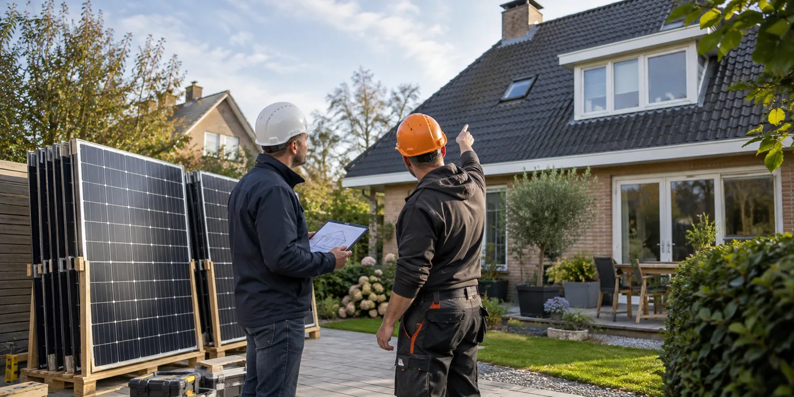

Maak eerst een installatiedossier
Verzamel het keuringsverslag, schema’s, serienummers en gegevens van de omvormer. Laat beoordelen wat kan worden hergebruikt en welke onderdelen mogelijk vervangen moeten worden. Vermeld ook bestaande certificaten of andere historische regelingen, zodat wijzigingen niet zonder administratieve controle gebeuren.
Plan één duidelijke overdracht
Vraag wie de installatie veilig buiten dienst stelt, wie panelen opslaat en wie de nieuwe bevestiging beoordeelt. Laat afspraken maken over schade, transport en planning. Een dakwerker die de bedekking vervangt en een PV-installateur die later terugkomt, moeten over dezelfde uitgangspunten beschikken. Foto’s van de oorspronkelijke installatie helpen bij die overdracht.

Sluit af met controle en administratie
Fluvius beschrijft dat zonnepanelen bij dakvervanging tijdelijk uit dienst kunnen worden genomen. Vraag de installateur welke keuring en meldingen voor jouw veranderingen nodig zijn. Controleer na herplaatsing de monitoring en documenteer wat gewijzigd werd. Beschouw oude en nieuwe meetgegevens niet automatisch als vergelijkbaar als de configuratie is aangepast.
Vergelijk hergebruik met vervanging zonder haast
Demontage kan een moment zijn om naar de bestaande apparatuur te kijken, maar maakt vervanging niet vanzelf noodzakelijk. Vraag beide opties afzonderlijk en laat aangeven welke onderdelen bij hergebruik gecontroleerd worden. Houd een eventuele uitbreiding los van de verplichte dakwerken. Zo blijft duidelijk welke kosten door de renovatie veroorzaakt worden en welke voortkomen uit een nieuwe energiekeuze. Laat administratieve gevolgen ook voor de hergebruikvariant bespreken, niet alleen voor de nieuwe installatie.
Hergebruik begint vóór de demontage
Vraag de PV-installateur welke bestaande onderdelen geïnspecteerd worden en wat bij herplaatsing opnieuw beoordeeld moet worden. Leg de huidige opstelling vast met foto’s en beschikbare schema’s. Noteer waar veranderingen uit vroegere reparaties zitten. Een voorbereiding die alleen het aantal panelen telt, mist informatie over de rest van het systeem. Laat ook onderscheid maken tussen hergebruik van panelen en hergebruik van bevestiging of andere onderdelen. De nieuwe dakopbouw kan een andere beoordeling vragen, ook wanneer de elektrische installatie zelf grotendeels behouden blijft. Dat onderzoek hoort vóór de definitieve gezamenlijke werfplanning.
Maak opslag een concrete werfpost
Beschrijf waar de gedemonteerde panelen worden bewaard, hoe ze worden verplaatst en wie tijdens die periode verantwoordelijk is voor de organisatie. Vraag of opslag en vervoer in de prijs zitten en hoe beschadigingen worden vastgesteld. Maak bij overdracht een herkenbare inventaris met foto’s. Je hoeft daarvoor geen technisch inspectierapport te schrijven, maar de partijen moeten wel kunnen nagaan welke onderdelen overgedragen werden. Zo blijft een beschadiging niet hangen in een discussie over wat vóór, tijdens of na de dakwerken gebeurd zou zijn. Laat de betrokken bedrijven die praktische overdracht afstemmen.
Herplaatsing is niet alleen terugleggen
Na dakrenovatie moeten ligging, montage en elektrische uitvoering passen bij de gemaakte dakopbouw en de gekozen configuratie. Vraag welke controles daarvoor worden uitgevoerd en wie de resultaten documenteert. Neem wijzigingen aan omvormer of panelen afzonderlijk mee in het dossier. Een andere opstelling of extra apparatuur is een nieuwe keuze, niet automatisch onderdeel van het terugplaatsen van de oorspronkelijke installatie. Laat ook bespreken welke keuring en meldingen bij jouw werkzaamheden horen. De informatie van Fluvius over aanpassingen geeft daarvoor achtergrond, terwijl de installateur de concrete opdracht en vereiste documenten moet afbakenen.
Vergelijk de financiële varianten zonder alles samen te voegen
Vraag een variant voor noodzakelijk demontage- en herplaatsingswerk en een afzonderlijke variant voor eventuele uitbreiding of vervanging. Houd de dakrenovatiekosten herkenbaar naast beide opties. Zo kun je zien welk deel van de investering ontstaat doordat het dak vernieuwd wordt en welk deel voortkomt uit een nieuwe energiekeuze. Laat geschatte meeropbrengst niet als vaste compensatie voor iedere extra post voorstellen. Een duidelijke vergelijking hoeft geen ingewikkeld model te zijn: dezelfde dakopdracht, dezelfde bestaande configuratie en afzonderlijk benoemde PV-wijzigingen maken al zichtbaar wat je precies beslist.
Controleer de overdracht bij het opnieuw opstarten
Vraag de installateur de bijgewerkte monitoring en configuratie uit te leggen. Bewaar de herplaatsingsdatum zodat je oude en nieuwe gegevens correct kunt onderscheiden. Laat bevestigen welke documenten en meldingen afgerond zijn en welke nog volgen. Noteer een aanspreekpunt voor vragen over het dak én voor vragen over de installatie. Als een latere vochtvraag dicht bij een bevestigingspunt ontstaat, wil je weten hoe beide partijen onderzoek afstemmen. Die afspraak betekent niet vooraf bepalen wie aansprakelijk is; ze zorgt dat een praktisch probleem niet tussen twee afzonderlijke opdrachten verdwijnt.
Praktische vergelijking
| Onderdeel | Afspraak vóór de werf | Bewijs bij overdracht |
|---|---|---|
| Demontage | Uitvoerder en timing | Inventaris van onderdelen |
| Opslag | Plaats, vervoer en organisatie | Foto’s en ontvangst |
| Herplaatsing | Montage op nieuwe dakopbouw | Bijgewerkte configuratie |
| Administratie | Keuring en meldingen | Documenten en bevestigingen |
Een praktisch voorbeeld
De dakwerker begint maandag, maar de PV-installateur is pas vrijdag beschikbaar. Zonder afgestemde planning kan dat de hele werf blokkeren. Plan het buiten dienst stellen en de dakstart als één overdrachtsmoment.
Illustratief scenario, geen klantcase.
Neem dit mee naar je gesprek
- Schema’s en serienummers
- Demontage en opslag toegewezen
- Nieuwe bevestiging beoordeeld
- Keuring en meldingen besproken
Veelgestelde vraag
Kan elke oude installatie ongewijzigd teruggeplaatst worden?
Laat hergebruik en bevestiging beoordelen. De nieuwe dakopbouw kan andere eisen stellen.
Bron en achtergrond
Fluvius: officiële of technische achtergrond bij dit onderwerp ↗
Geraadpleegd op 13 oktober 2026. De praktische checklist en het voorbeeld zijn redactionele uitwerkingen. Fabrikantinformatie geldt voor de beschreven producten; ze is geen algemene garantie voor andere systemen.
Wat betekent dit voor jouw woning?
Gebruik de calculator voor een eerste indicatie. Een vakman beoordeelt jouw situatie en bevestigt de uitvoering en definitieve prijs.
Bekijk de dakwerkencalculator →